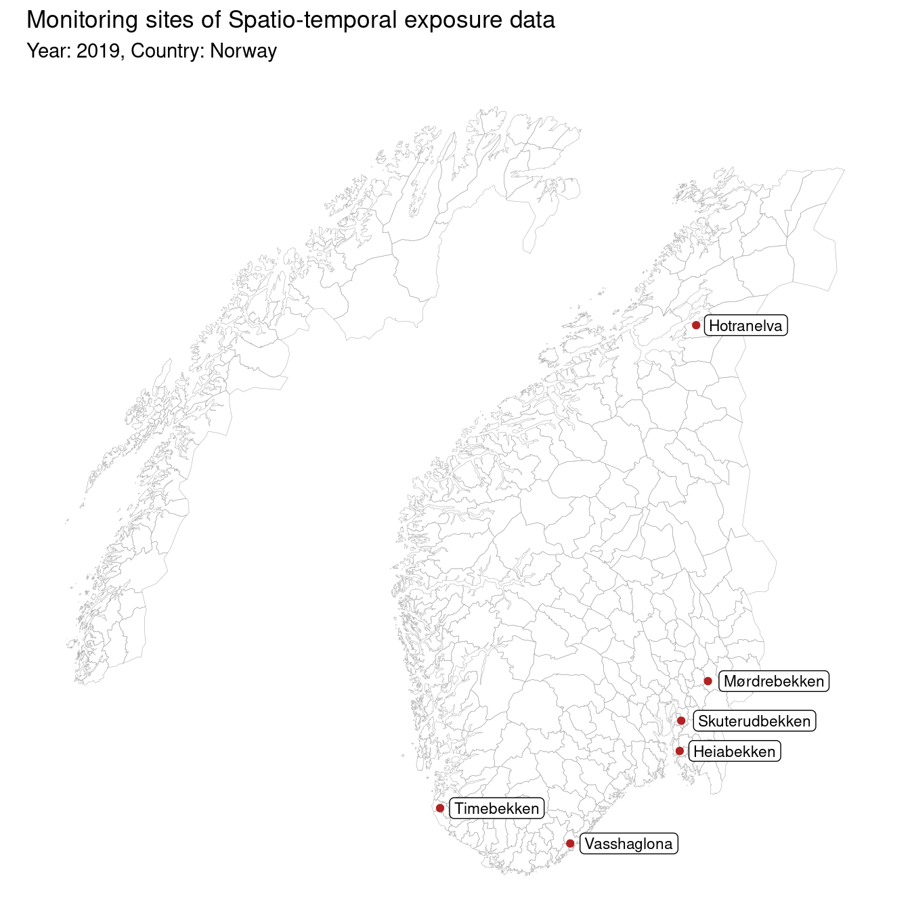

csmaps::nor_municip_map_b2020_split_dt %>%ggplot(aes(long, lat, group = group)) +geom_polygon(fill =NA, color ="darkgrey", linewidth =0.1) +geom_label(data = site_data, aes(x = LONGITUDE, y = LATITUDE, label = SITE_NAME),group =1,size =rel(3),hjust =-0.1,label.r =unit(2.5, "pt") ) +geom_point(data = site_data, aes(x = LONGITUDE, y = LATITUDE),group =1,color ="firebrick" ) +theme_void() +coord_map() +labs(title ="Monitoring sites of Spatio-temporal exposure data",subtitle ="Year: 2019, Country: Norway" )

In each of these locations, levels of various stressors were measured in [Freshwater] between dates [mai 06, 2019 and oktober 28, 2019]. The average level of contration of each stressor in these location is as follows.
Average level of stressor
Code
exposure_data %>%group_by(STRESSOR_NAME, SITE_NAME) %>%summarize(across(MEASURED_VALUE, ~list(ggplot2::mean_se(.x)))) %>%unnest() %>%rename(x = y, xmin = ymin, xmax = ymax) %>%ggplot(aes(x, STRESSOR_NAME)) +facet_grid(cols =vars(SITE_NAME)) +geom_pointrange(aes(xmin = xmin, xmax = xmax),shape =21, fill ="whitesmoke",stroke =1 ) + ggthemes::theme_few() +theme(panel.grid =element_line(color ="#f0f0f0") ) +labs(x ="Contration in water (ug/L)",title ="Average contration of stressors in each location",y =NULL )
Water concentration (ug/L) of these stressor are skewed towards zero with long right tail. In one of the location (Timebekken), because of small sample size, the distribution is not clear.
The chemical properties of stressor such as “MolecularWeight” and partition coefficient (LogP or XLogP) are extracted using webchem::pc_prop command from webchem package using compound ID. The Compound ID were fetched using the command webchem::get_cid using the INCHIKEY variable available in the dataset.
Concentration in fish
Shiny App for Exploration
A shiny app can help to explore the data further. To run the shiny app from the local computer,